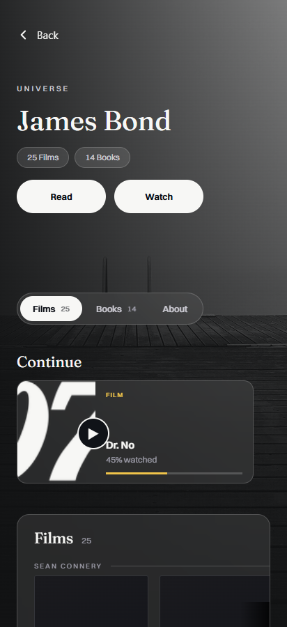
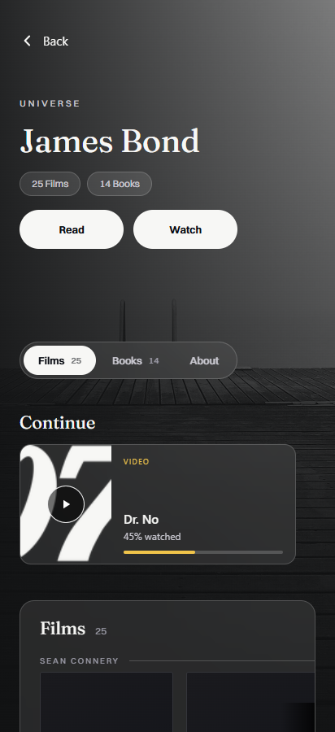
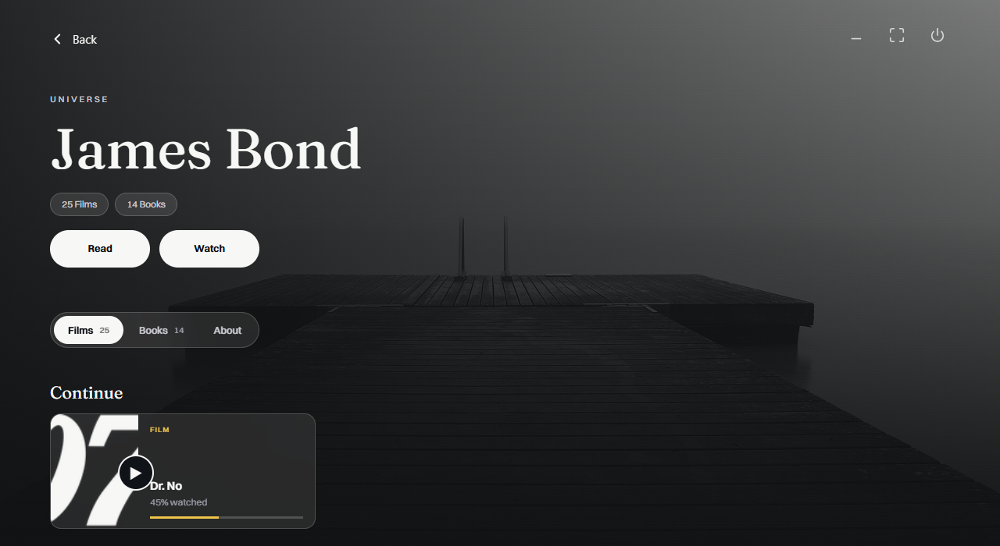
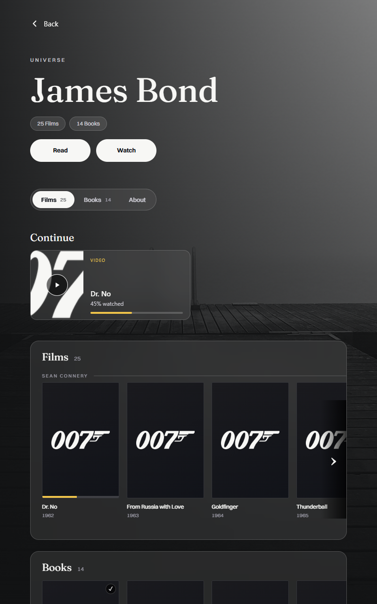
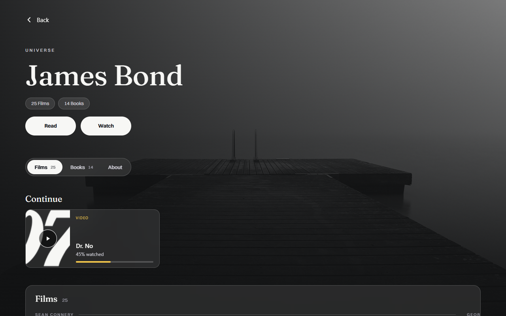
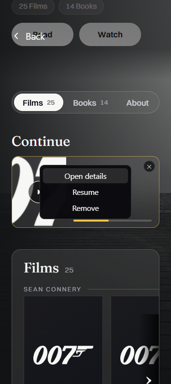
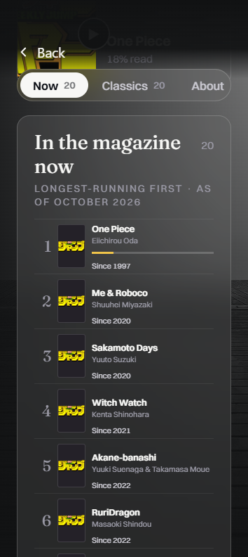
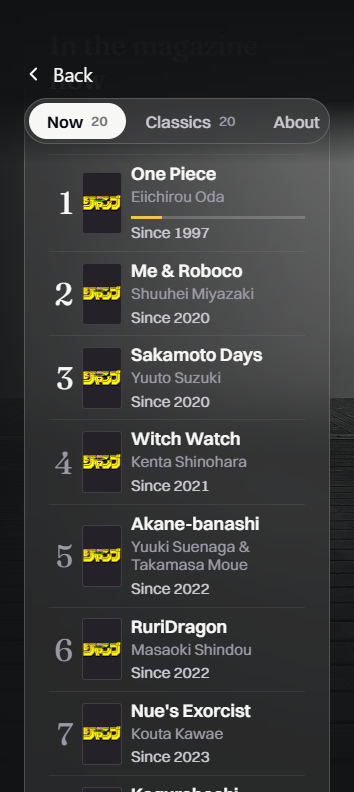
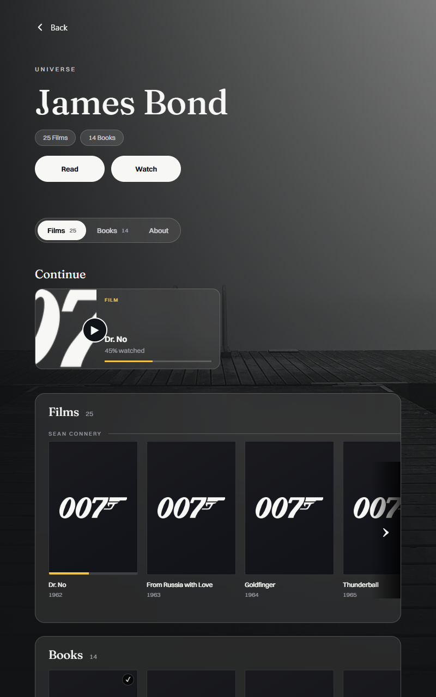

Shelves universe — comparison
Finished index · Review · QML notes
Run finished workbenchRun preserved original
Original worker HTML is a baseline, not approved native output. Both versions retain disclosed project artwork stand-ins. Full screenshots and metadata are linked below. Different-state comparisons explicitly name the tested transition.
25 films; 14 books; final rail items; 40 magazine rows including last Now and Classics; actual 1.3 text growth; Continue; About; tab alternatives. Continue context menu, focus return and Remove signal boundary.
412×900 portrait
Original worker HTML
412×900 · 2026-10-31T23:06:53.288Z · SHA-256 303533163b157ba41fdb4602785d7d6be2367ebe07136c0df7ea3e07b788a547
Capture metadata
shelves-original-portraitFinished HTML
412×900 · 2026-10-31T23:33:32.622Z · SHA-256 5c717dadf729880f7e46dcd9aedea2460bd643e91f10f7a4a7d15afcee76e77f
Capture metadata
shelves-finished-verified-portrait 900×412 landscape
Original worker HTML900×412 · 2026-10-31T23:06:56.832Z · SHA-256 1b6e64961bb546fb6b49747360e786ea73c387da40f60872066e1e823dd269b4
Capture metadata
shelves-original-landscapeFinished HTML900×412 · 2026-10-31T23:33:35.826Z · SHA-256 145a68d0bdae71823c7fa9a021be7fb350146230acc478f2ad95825d6a7ecdcb
Capture metadata
shelves-finished-verified-landscape 1280×700 desktop HTML comparison
Original worker HTML
1280×700 · 2026-10-31T23:07:01.898Z · SHA-256 711b7d2e23bf7fd3f9a4da710a23fbce975aa1532c6160623d796160d8b29222
Capture metadata
shelves-original-desktop-htmlFinished HTML1280×700 · 2026-10-31T23:33:40.058Z · SHA-256 f0e21d5ec433b637f6bc17584f49b6cab1d2d5405de3723904ac14fc876ae8ba
Capture metadata
shelves-finished-verified-desktop-html 354×792 portrait
Original worker HTML354×792 · 2026-10-31T23:06:55.135Z · SHA-256 9f7ac24a2528a4ae90f11ec5387d38e9f74c0df3dd750b29156caa7106378e45
Capture metadata
shelves-original-portrait-smallFinished HTML354×792 · 2026-10-31T23:33:34.427Z · SHA-256 9bbe9a5c96df786a70899f26d58da2b15097cdfec03327b342cc9e4cc723f749
Capture metadata
shelves-finished-verified-portrait-small 792×354 landscape
Original worker HTML792×354 · 2026-10-31T23:06:59.199Z · SHA-256 fb99b336c652033b22ddd563810a48388977d549f2a20a514ae774262df4d8ee
Capture metadata
shelves-original-landscape-smallFinished HTML792×354 · 2026-10-31T23:33:37.325Z · SHA-256 8d6ac0e1652a12783d0d0e753cc129b84b8f48f3f01ed9d9c8442d7e78be7450
Capture metadata
shelves-finished-verified-landscape-small Tablets — finished versions
800×1280 Android tablet
800×1280 · 2026-10-31T23:33:41.766Z · SHA-256 1b58497a2cb0151eca7ac52c371c2dd9302dd568148f405750c2a5e95ed739ce
Capture metadata
shelves-finished-verified-tablet-portrait1280×800 Android tablet
1280×800 · 2026-10-31T23:33:43.485Z · SHA-256 7cc9cf95a8b6bbd9fce0859895600d61e7e6f465849a39940f6dcb2532778283
Capture metadata
shelves-finished-verified-tablet-landscape Continue context surface restored
Original worker HTML354×792 · 2026-10-31T23:34:25.271Z · SHA-256 fdf24f7c3ef413ff568be56902f9bcfa9b0771ec4e744668a4d46ae2b9065636
Capture metadata
shelves-original-continue-context-absent-portrait-small-stressFinished HTML
354×792 · 2026-10-31T23:32:44.029Z · SHA-256 12a06416755cf1026239445a76f3f705d1c3b3aa86050f33fdb17a37d33ab1c6
Capture metadata
shelves-finished-continue-context-portrait-small-stress Magazine text grows at stress scale
Original worker HTML
354×792 · 2026-10-31T23:07:12.580Z · SHA-256 32a2996fa682f0f7b6ad23e02521d2afdf71d7a8ff99f0b44fef2d290b50d615
Capture metadata
shelves-original-jump-portrait-stressFinished HTML
354×792 · 2026-10-31T23:14:40.051Z · SHA-256 e49edbf4d4b56e569a67cfd90b8476bb87c4acdcbb7e09cbdb60d6d8abfa42b4
Capture metadata
shelves-finished-jump-portrait-small-stress Tablet source typography restored
Original worker HTML
800×1280 · 2026-10-31T23:27:17.200Z · SHA-256 7b30cd2fbf53af7456e4734733e307ad3450c3a867af3cab478fa8814ab2197d
Capture metadata
shelves-original-tablet-portraitFinished HTML800×1280 · 2026-10-31T23:33:41.766Z · SHA-256 1b58497a2cb0151eca7ac52c371c2dd9302dd568148f405750c2a5e95ed739ce
Capture metadata
shelves-finished-verified-tablet-portrait B2-018 original tab attempt / proposed alternative is pending Hemanth’s choice.
Evidence ledgers